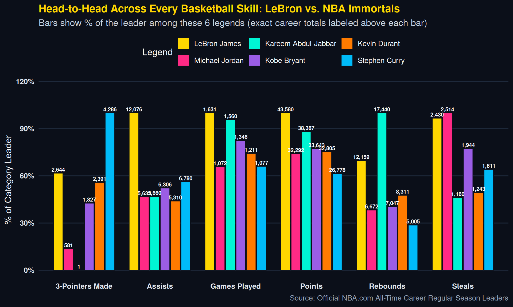

Why LeBron James is the Greatest of All Time
Real Career Data Across the Top 400 Scorers in NBA History
1. Every Top-400 NBA Player in History: Scoring vs. Playmaking
LeBron James is the only player in NBA history with 40,000+ Points, 12,000+ Rebounds, and 12,000+ Assists. Every dot below is one of the real Top 400 scorers in NBA history — hover over any of the 400 dots to inspect that player’s name, career totals, and per-game averages, or zoom in to see all player labels!
2. Why LeBron Is Undeniably #1: Total All-Time Rank Across Every Skill
Most legends dominate one or two categories (scorers score, centers rebound, point guards pass). Out of 5,157 players in NBA history, LeBron ranks in the Top 6 all-time in Points (#1), Minutes (#1), Games (#1), Field Goals (#1), Assists (#4), Steals (#6), and 3-Pointers (#6), while also sitting #23 all-time in Rebounds.
